Explanation
TRANSPORT is the keyword for the data block. No other data are input on the keyword line.
-cells--Indicates that the number of cells in the 1D column will be given. Optionally, cells or -c[ ells].
cells --Number of cells in a 1D column to be used in the advective-dispersive transport simulation. Default is 0.
-shifts--Indicates that the number of shifts or diffusion periods in the advective-dispersive transport simulation will be given. Optionally, shifts or -s[ hifts].
shifts
--For advective-dispersive transport,
shifts
is the number of advective shifts or time steps, which is the number of times the solution in each cell will be shifted to the next higher or lower numbered cell; the total time simulated is  . For purely diffusive transport,
shifts
is the number of diffusion periods that are simulated; the total diffusion time is 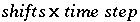
. Default is 1.
. For purely diffusive transport,
shifts
is the number of diffusion periods that are simulated; the total diffusion time is 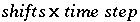
. Default is 1.
-time_step--Defines time step associated with each advective shift or diffusion period. The number of shifts or diffusion periods is given by -shifts. Optionally, timest, -t[ imest], time_step, or -t[ ime_step].
time step --Time, in seconds, associated with each shift or diffusion period. Default is 0.
Line 4: -flow_direction ( forward, back, or diffusion_only)
-flow_direction--Defines direction of flow. Optionally, direction, flow, flow_direction, -dir[ ection], or -f[ low_direction].
forward, back, or diffusion_only--(1) Forward, advective flow direction is forward; optionally, f[ orward], (2) Backward, advective flow direction is backward; optionally b[ ackward], or (3) Diffusion_only, only diffusion occurs, there is no advective flow; optionally d[ iffusion_only] or n[ o_flow]. Default is forward.
Line 5: -boundary_conditions first, last
-boundary_conditions--Defines boundary conditions for the first and last cell. Optionally, bc, bcond, -b[ cond], boundary_condition, -b[ oundary_condition]. Three types of boundary conditions are allowed at either end of the column (indicated by 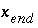 ):
constant--Concentration is constant 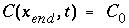 , also known as first type or Dirichlet boundary condition. Optionally, co[ nstant] or 1.
closed--No flux at boundary, 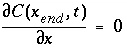 , also known as second type or Neumann boundary condition. Optionally, cl[ osed] or 2.
flux--Flux boundary condition, 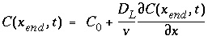 , also known as third type or Cauchy boundary condition. Optionally, f[ lux] or 3.
first --Boundary condition at the first cell, constant, closed, or flux. Default is flux.
last --Boundary condition at the last cell, constant, closed, or flux. Default is flux.
Line 6: -lengths list of lengths
-lengths--Defines length of each cell for advective-dispersive transport simulations (m). Optionally, length, lengths, or -l[ engths].
list of lengths --Length of each cell (m). Any number of lengths up to the total number of cells ( cells ) may be entered. If cells is greater than the number of lengths entered, the final value read will be used for the remaining cells. Multiple lines may be used. Repeat factors can be used to input multiple data with the same value; in the example data block, 4*1.0 is interpreted as 4 values of 1.0. Default is 1.
Line 7: -dispersivities list of dispersivities
-dispersivities--Defines dispersivity of each cell for advective-dispersive transport simulations (m). Optionally, disp, dispersivity, dispersivities, -dis[ persivity], or -dis[ persivities].
list of dispersivities --Dispersivity assigned to each cell (m). Any number of dispersivities up to the total number of cells ( cells ) may be entered. If cells is greater than the number of dispersivities entered, the final value read will be used for the remaining cells. Multiple lines may be used. Repeat factors can be used to input multiple data with the same value; in the example data block, 4*0.1 is interpreted as 4 values of 0.1. Default is 0.
Line 8: -correct_disp [( True or False )]
When true , dispersivity is multiplied with (1 + 1/ cells ) for column ends with flux boundary conditions. This correction is recommended when modeling effluent composition from column experiments. Optionally, correct_disp or -co[ rrect_disp]. Default is True, value at beginning of run is False.
Line 9: -diffusion_coefficient diffusion coefficient
-diffusion_coefficient--Defines diffusion coefficient for all aqueous species (m 2 /s). Optionally, diffusion_coefficient, diffc, -dif[ fusion_coefficient], or -dif[ fc].
diffusion coefficient --Diffusion coefficient. Default is 0.3e-9 m 2 /s.
Line 10:
-stagnant
stagnant_cells
[
exchange_factor 
 ]
]
-stagnant--Defines the maximum number of stagnant (immobile) cells associated with each cell in which advection occurs (mobile cell). The immobile cells are usually defined to be a 1D column that is connected to the mobile cell; however, the connections among the immobile cells may be defined arbitrarily with MIX data blocks. The immobile cells associated with a mobile cell, cell , are numbered as follows: 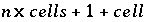 , where cells is number of mobile cells and 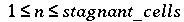 . Each immobile cell that is used must have a defined solution ( SOLUTION, SOLUTION_SPREAD, or SAVE data block) and either a MIX data block must be defined or, for the first-order exchange model, the exchange_factor must be defined (only applicable if stagnant_cells equals 1). Mixing will be performed at each diffusion/dispersion time step. EQUILIBRIUM_PHASES, EXCHANGE, GAS_PHASE, KINETICS, REACTION, REACTION_TEMPERATURE, SOLID_SOLUTIONS, and SURFACE may be defined for an immobile cell. Thermal diffusion in excess of hydrodynamic diffusion can only be calculated for the first-order exchange model. Optionally, stagnant or -st[ agnant].
stagnant_cells --Number of stagnant (immobile) cells associated with each mobile cell. Default is 0.
exchange_factor --Factor describing exchange between mobile and immobile cells (s -1 ). The exchange_factor is used only if stagnant_cells is 1 and all immobile cells have the same properties. WARNING: If exchange_factor is entered, all previously defined MIX structures will be deleted and MIX structures for the first order exchange model for a dual porosity medium will be created. Default is 0.
 --Porosity in each mobile cell. The
--Porosity in each mobile cell. The  is used only if
stagnant_cells
is 1 and all immobile cells have the same properties. Default is 0.
is used only if
stagnant_cells
is 1 and all immobile cells have the same properties. Default is 0.
 --Porosity in each immobile cell. The
--Porosity in each immobile cell. The  is used only if
stagnant_cells
is 1 and all immobile cells have the same properties. Default is 0.
is used only if
stagnant_cells
is 1 and all immobile cells have the same properties. Default is 0.
Line 11: -thermal_diffusion temperature retardation factor, thermal diffusion coefficient
-thermal_diffusion--Defines parameters for calculating the diffusive part of heat transport. Diffusive heat transport will be calculated as a separate process if the temperature in any of the solutions of the transport domain differs by more than 1°C, and when the
thermal diffusion coefficient
is larger than the effective (aqueous)
diffusion coefficient
. Otherwise, diffusive heat transport is calculated as a part of aqueous diffusion. The
temperature retardation factor
is defined as the ratio of the heat capacity of the total aquifer over the heat capacity of water in the pores, and equals 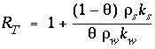
, where  is the water filled porosity, 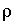
is density (kg/m
3
),
k
is specific heat (kJ°C
-1
kg
-1
), and subscripts
w
and
s
indicate water and solid, respectively. The thermal diffusion coefficient can be estimated using 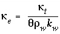
, where
is the water filled porosity, 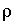
is density (kg/m
3
),
k
is specific heat (kJ°C
-1
kg
-1
), and subscripts
w
and
s
indicate water and solid, respectively. The thermal diffusion coefficient can be estimated using 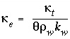
, where  is the heat conductivity of the aquifer, including pore water and solid (kJ°C
-1
m
-1
s
-1
). The value of
is the heat conductivity of the aquifer, including pore water and solid (kJ°C
-1
m
-1
s
-1
). The value of  may be 100-1500 times larger than the aqueous diffusion coefficient, or about 1e-6 m
2
/s. A temperature change during transport is reduced by the temperature retardation factor (-) to account for the heat capacity of the matrix. Optionally,
-th[ermal_diffusion].
may be 100-1500 times larger than the aqueous diffusion coefficient, or about 1e-6 m
2
/s. A temperature change during transport is reduced by the temperature retardation factor (-) to account for the heat capacity of the matrix. Optionally,
-th[ermal_diffusion].
retardation factor --Temperature retardation factor, unitless. Default is 2.0.
thermal diffusion coefficient --Thermal diffusion coefficient. Default is the aqueous diffusion coefficient.
Line 12: -initial_time initial_time
-initial_time--Identifier to set the time at the beginning of a transport simulation. The identifier sets the initial value of the variable controlled by -time in the SELECTED_OUTPUT data block. Optionally, initial_time or -i[ nitial_time].
initial_time --Time (seconds) at the beginning of the transport simulation. Default is the cumulative time including all preceding ADVECTION simulations for which -time_step has been defined and all preceding TRANSPORT simulations.
Line 13: -print_cells list of cell numbers
-print_cells--Identifier to select cells for which results will be written to the output file. Optionally, print, print_cells, or -pr[ int_cells]. Note the hyphen is required to avoid a conflict with the keyword PRINT.
list of cell numbers --Printing to the output file will occur only for these cell numbers. The list of cell numbers may be continued on the succeeding line(s). A range of cell numbers may be included in the list in the form m-n , where m and n are positive integers, m is less than n , and the two numbers are separated by a hyphen without intervening spaces. Default 1- cells .
Line 14: -print_frequency print_modulus
-print_frequency--Identifier to select shifts for which results will be written to the output file. Optionally, print_frequency, -print_f[ requency], output_frequency, or -o[ utput_frequency].
print_modulus --Printing to the output file will occur after every print_modulus advection shifts or diffusion periods. Default is 1.
Line 15: -punch_cells list of cell numbers
-punch_cells--Identifier to select cells for which results will be written to the selected-output file. Optionally, punch, punch_cells, -pu[ nch_cells], selected_cells, or -selected_c[ ells].
list of cell numbers --Printing to the selected-output file will occur only for these cell numbers. The list of cell numbers may be continued on the succeeding line(s). A range of cell numbers may be included in the list in the form m-n , where m and n are positive integers, m is less than n , and the two numbers are separated by a hyphen without intervening spaces. Default 1- cells .
Line 16: -punch_frequency punch_modulus
-punch_frequency--Identifier to select shifts for which results will be written to the selected-output file. Optionally, punch_frequency, -punch_f[ requency], selected_output_frequency, -selected_o[ utput_frequency].
punch_modulus --Printing to the selected-output file will occur after every punch_modulus advection shifts or diffusion periods. Default is 1.
-dump--Identifier to write complete state of a advective-dispersive transport simulation after every dump_modulus advection shifts or diffusion periods. The file is formatted as an input file that can be used to restart calculations. Optionally, dump or -du[ mp].
dump file --Name of file to which complete state of advective-dispersive transport simulation will be written. Default is phreeqc.dmp .
Line 18: -dump_frequency dump_modulus
-dump_frequency--Complete state of a advective-dispersive transport simulation will be written to dump file after dump_modulus advection shifts or diffusion periods. Optionally, dump_frequency or -dump_f[ requency].
dump_modulus --Complete state will be printed after dump_modulus advection shifts or diffusion periods. Default is shifts /2 or 1, whichever is larger.
Line 19: -dump_restart shift number
-dump_restart--If an advective-dispersive transport simulation is restarted from a dump file, the starting shift number is given on this line. Optionally, dump_restart or -dump_r[ estart].
shift number --Starting shift number for the calculations, if restarting from a dump file. The shift number is written in the dump file by PHREEQC. It equals the shift number at which the dump file was created. Default is 1.
Line 20: -warnings [( True or False )]
-warnings--Identifier enables or disables printing of warning messages for transport calculations. In some cases, transport calculations could produce many warnings that are not errors. Once it is determined that the warnings are not due to erroneous input, disabling the warning messages can avoid generating large output files. Optionally, warnings, warning, or -w[ arnings].
[( True or False )]--If value is true, warning messages are printed to the screen and the output file; if value is false, warning messages are not printed to the screen or the output file. The value set with -warnings is retained in all subsequent transport simulations until changed. Default is True, value at beginning of run is True.
 and
and  for the mobile and immobile cells. WARNING: If this shortcut method is used to define the stagnant zone, then all previously defined
MIX structures will be deleted and
MIX structures for first order exchange in a dual porosity medium are set up.
for the mobile and immobile cells. WARNING: If this shortcut method is used to define the stagnant zone, then all previously defined
MIX structures will be deleted and
MIX structures for first order exchange in a dual porosity medium are set up. .
.